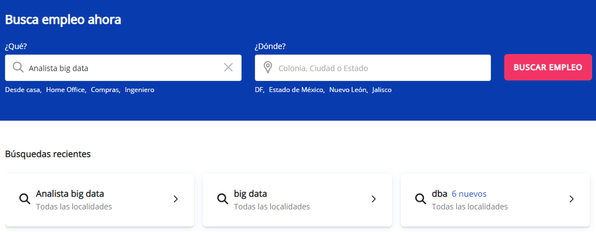
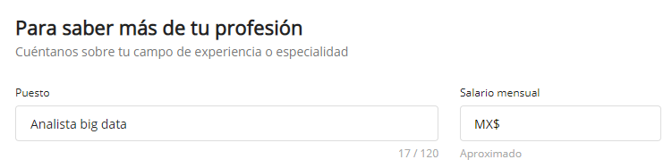

Se adecuará el tracking implementado en la v1 para expandir los datos recolectados a la funcionalidad de sugerencia con base a la cookie de “Búsquedas recientes”.
Cuando el usuario llegué a la sección “Profesión”, se pre-llenará el campo “Puesto” con alguna sugerencia basada en sus búsquedas recientes.
